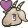

Baumgartner Guillaume

Expérience professionelle
- Streamer sur Twitch.tv (Depuis Oct. 2017)
- Développeur web - Adéqu@tionWeb à Hirsingue (stage 2 mois)
- Technicien Informatique - Adéqu@tionWeb à Hirsingue (stage 1 mois)
- Technicien informatique - Concept Office Online à Mulhouse (stage 1 mois)
- Technicien Informatique - Adéqu@tionWeb à Hirsingue (stage 1 mois)
Mes compétences
Il n'y a rien à voir ici mais ne vous inquiétez pas ça changera ;)
Ma formation
-
Niveau BTS IRIS
- Projet 1ère année: développement d'une interface utilisateur destinée au pilotage d'un AR drone de Parrot
- Projet 2ème année: réalisation d'une démo d'un logiciel
- Obtention du BAC PRO SEN (Systèmes Électroniques Numériques)
- Obtention du BEP Métiers de l'Électrotechnique